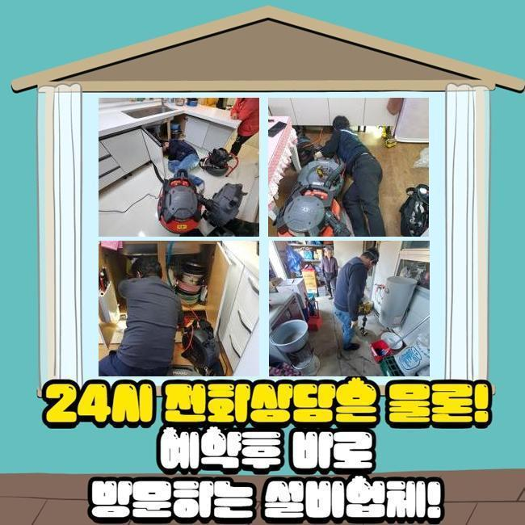
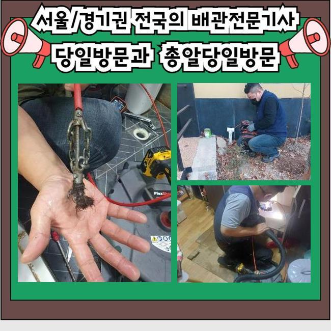
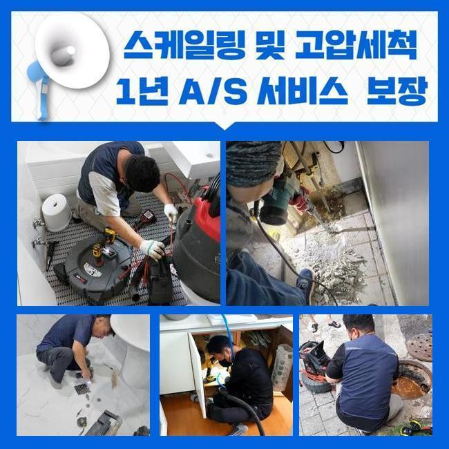
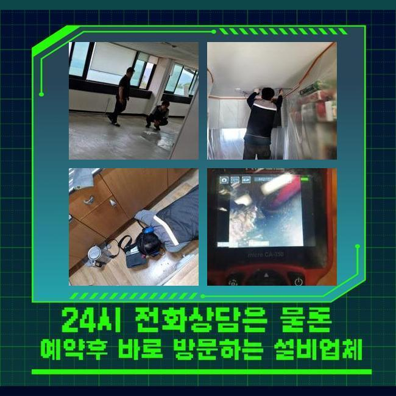
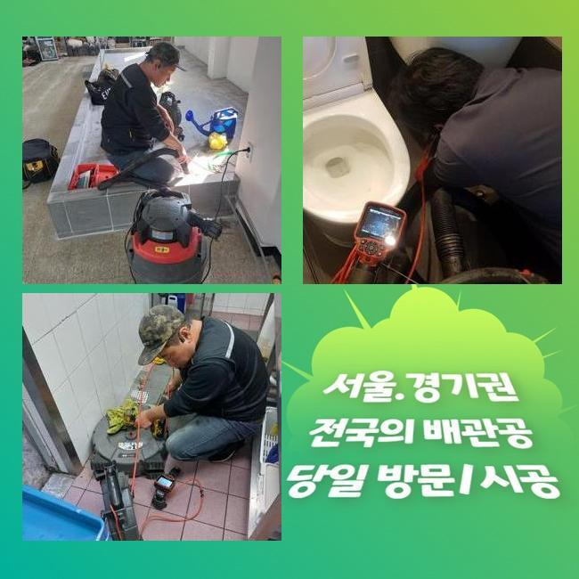
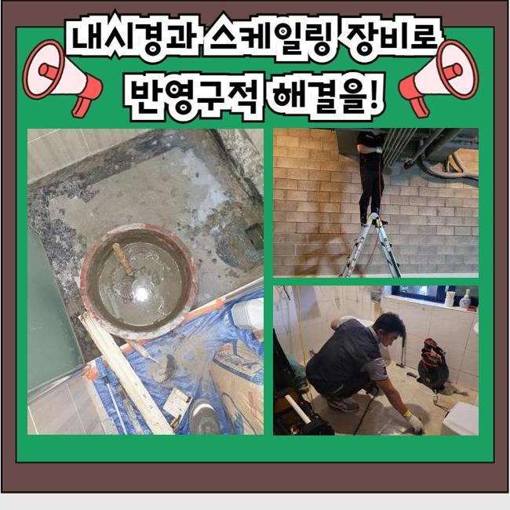
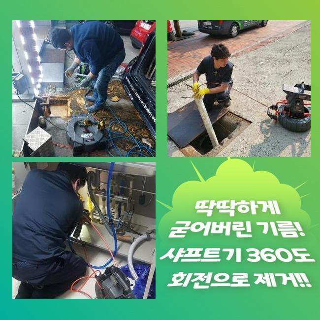

🏠 포항 오수관청소 싱크대배수구교체 변기관통기 주방하수구청소
용인 싱크대막힘 전문 시공 후기

📋 작업 개요
- 위치: 용인
- 서비스 유형: 싱크대막힘, 변기막힘, 하수구막힘, 배관막힘, 역류해결, 뚫는업체, 배관청소, 고압세척
- 작업 일시: 2024. 11. 10. 22:53
- 업체명: 하수구수사대 (010-5615-2118)
🔍 문제 상황
포항 오수관청소 싱크대배수구교체 변기관통기 주방하수구청소
어떤곳이라도 배관이존재하고 언제어느때든 이용됩니다
여러원인으로 막힘문제를 경험하시는데요
막힘문제가 발발되었다면 빠르고신속히 막히게된 하수도를 처리하셔야해요
방임하게된다면 여러방면의 2차피해를 일으킵니다
현장상태에따라 공통으로쓰는 하수관에서 발현되기도해요
혼자서직접 알아낼수없는 문제이므로 현장장소로 이동해서 군데군데 상세하게 조사해야합니다
의뢰주신곳은 상가건물로 물이빠지지않고 역류문제까지 발생되었다고 알려주셔서 배관막힘이 발현된걸 알수있었어요
상가건물의경우 공통적으로 쓰게되는곳이 즐비한데 무슨원인으로인해 막히게되었는지 파악하셔야해요
오랫동안 이러한문제가 처리되지않을경우 상가운영시 불편할겁니다
현장내방으로 문제를 해결하기위해 파악해보기로했죠
건물로들어가서 수도를틀어보니 물이빠지는게 정상작동으로 이뤄지지않고 넘치기까지했죠

🔎 원인 분석
💡 전문가 진단: 정밀 진단 장비를 사용하여 슬러지의 고착 여부를 판명하고 타격/세척 작업을 실시했습니다.
좋지않은 냄새까지도 함께 일어났기때문에 원인을조속히 처리해야했어요
많은시설에서 쓰이는하수는 한곳에쓰입니다
공용 배관이라고 지칭하는데 메인배관에서는 다양한 문제가 쉽게 발생할 수 있습니다
이렇기때문에 자신의건물에 별다른현상이 없더라도 역류나 막히는일을 마주하게됩니다
물이넘쳐서 심한냄새도 동반되었으므로 뚫는도구를 사용해서 해결해드리기로 결정했답니다
배관시스템은 하루종일 사용되는부분인데 예상과다르게 많은분께서 점검하지않아요
며칠지나면 괜찮다고생각해 가벼운 판단을하시죠
하지만 이물이 쌓이고쌓여 어느때 막힘이발현될지 누구도 알수없죠
이렇기에 정기적으로 관리를받는게 현상을 악화하는것을 막아볼수있죠
배관을보았더니 하수구입구부터 여러이물이 들어차있었어요
배수를막아 문제를보인것이죠
오염물질을 없애기위해 흡입장비를 사용했습니다

🔧 작업 과정
흡입기계를 활용하여 세세하게 빨아들이니 입구쪽에공간이 생기게되었어요
다음에는 막힌이유에대해 파악하기위하여 안속에 배관촬영기를 투입했습니다
긴노즐이달린 내시경장비는 안쪽깊이 살펴볼수있죠
파악해본결과 많은양의 슬러지들이 발견된거같이 내부속에도 이물이쌓인걸 확인할수있었어요
내부깊은쪽은 딱딱한덩어리가 발견되었어요
석회물에대해 설명드리자면 오래도록쌓이며 딱딱한상태로 퇴적된것을 의미한답니다
막힌동기는 석회덩어리였고 거대한상태로 이루어져있을뿐아니라 딱딱한상태였어서 흡입하기 어려웠어요
고착된이물은 석션장비만을 이용해서는 제거해내기가 쉽지않습니다
플렉스샤프트도구를 이용하여 고착물질들을 분쇄시키기로 했어요
분쇄기구를통해 잔해물분해후 잔여물질을 흡입장비로 빨아들였어요
이뿐아니라 안쪽에물때가 축적되있다보니 고압세척기로 제거해주기로했죠
고압청소의경우 가정집에서보다 외부배관이나 정화조청소시 자주활용하는 작업이랍니다
현장상황마다 어떤방법으로 해결해낼지 차이가있어서 상황에대한 파악을조속하게 해주는업체로 병행하셔야합니다
강한압력으로 온수를 배관깊이 집어넣었죠
고압의물을 쏴서 제거하기때문에 배관안에있는 이물질들이 제거된것을 확인할수있었습니다
이러한과정들을 쉬울거라고 생각하시는경우가 종종있죠 고압의물을 필요성있게 조절해내는건 쉽지않은데요
크랙이 발현될수있기에 시공진행시 확실하게 강도조절이 필요해요
카메라도구로 안쪽의 상태를 확인해가며 꼼꼼히 강력한수압의 물로쏴주었어요
남아있는이물이 없을수있도록 살펴보며 작업했더니 안쪽에 쌓여있었던 물때와 고착덩어리가 사라진것을 알수가있었어요


✅ 작업 완료
배수상황을 알아보고자 물빠짐을 테스트해봤죠
수전을틀어 물이넘치는지 알아보았어요
물이잘흐르기 시작했고 역류증상도 생기지않는것을 살펴보았어요
건물배관막힘 문제들이 해결되며 퀘퀘한악취까지 사라졌다는것을 느낄수있었죠
전국어디라도 한시간안으로 도착해드릴수있으니 문의주신다면 확실한 결과물로 나타낼게요




⚠️ 주방 싱크대 배관 막힘 예방 수칙
- ✅ 기름기가 묻은 식기나 프라이팬은 설거지 전 키친타올로 반드시 기름때를 닦아내세요.
- ✅ 주기적으로 싱크대 개수대에 뜨거운 물을 가득 받아 한 번에 내려 배관 내부 기름을 씻어내세요.
- ✅ 배수구 거름망을 미세한 필터로 사용하시고 음식물 찌꺼기가 틈으로 새어 들지 않게 관리하세요.
- ✅ 베이킹소다와 식초를 뜨거운 물과 함께 일주일에 한 번씩 부어주면 배관 살균과 막힘 예방에 좋습니다.
💡 핵심 정리
- 확실한 장비 작업(내시경 점검 및 샤프트 스케일링)으로 원인을 뿌리 뽑습니다.
- 작업 후 1년 이내에 동일한 부위 재발 시 100% 무상 A/S 서비스를 보장합니다.
- 서울 · 경기 · 인천 전 지역에 24시간 언제든 긴급 출동할 수 있도록 항시 대기 중입니다.
❓ 자주 묻는 질문 (FAQ)
🚨 용인 싱크대막힘 문제로 고민이신가요?
정확한 원인 진단과 확실한 시공으로 재발 없는 해결을 약속드립니다.
24시간 긴급 출동 | 서울 · 경기 · 인천 전지역 | 1년 내 재발 시 무상 A/S